library(tidyverse)
library(palmerpenguins)Non-Standard Geometries & Styled Plots
Beyond the Basics of Data Visualization
Historically, there have been five plot types that are considered basic or foundational:
- Histograms
- Boxplots
- Barcharts
- Scatterplots
- Line graphs1 (or time series plots)
While you may have never been explicitly told these are the basic plot types, hopefully this list is not surprising to you. It’s likely the case that, similar to the normal distribution, you knew about and were using these before you even knew their names, possibly through Excel or something back before you had taken any statistics courses.
This week, we’re going to learn about plots / geometries outside of these basic plots!
Lollipop plot with geom_segment()
All too often, we see people (students, researchers, newspapers) create barplots for variables that are not counts (e.g., mean salary). A barplot is designed to display the frequency of each level of a categorical variable, so people get confused when they are used to plot other summary statistics.
The lollipop plot solves this problem! A lollipop plot is the combination of two geometries—geom_segment() and geom_point(). The lollipop stick is created with geom_segment() and each lollipop’s head is created with geom_point().
Let’s give this a look using the penguins data from the palmerpenguins package.
species_means <- penguins |>
group_by(species) |>
summarize(mean_flipper = mean(flipper_length_mm, na.rm = TRUE))
ggplot(data = species_means,
mapping = aes(x = mean_flipper, y = species)
) +
geom_segment(aes(yend = species,
x = 0,
xend = mean_flipper),
color = "gray50") +
geom_point(size = 4, color = "steelblue") +
labs(x = "Mean Flipper Length (mm)",
y = "",
title = "Comparison of Flipper Lengths for Different Penguin Species"
)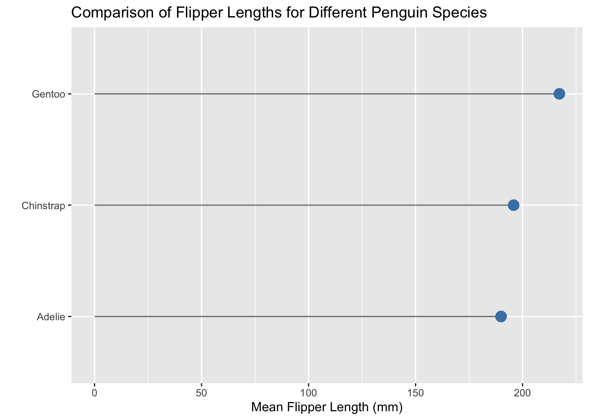
Ridgeline plot with geom_density_ridge()
Boxplots are an easy way to assess how different the centers (medians) and spreads (IQR, range) are between groups. However, boxplots do not display the shape of a distribution. Specifically, boxplots hide distributions with multiple modes (peaks).
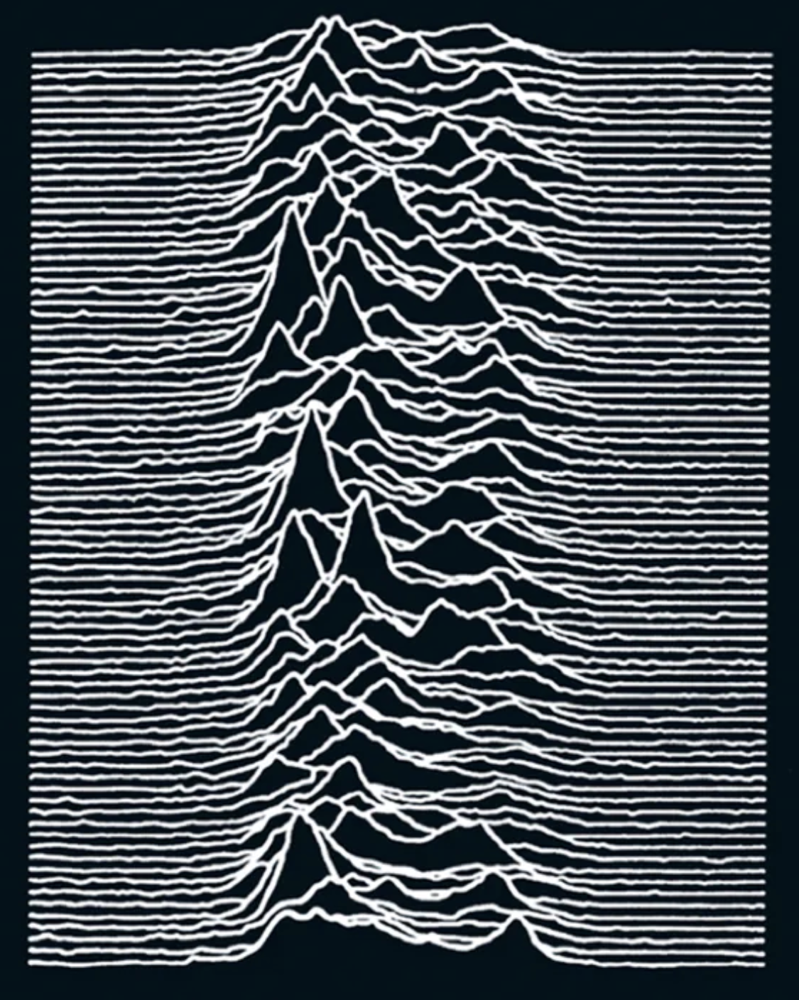
The ridgeline plot solves this problem! A ridgeline plot is comprised of vertically stacked density plots. Because the ridgelines are stacked vertically, the categorical variable needs to be mapped to the y-axis.
library(ggridges)
ggplot(data = penguins,
mapping = aes(x = flipper_length_mm,
y = species,
fill = species)) +
geom_density_ridges(alpha = 0.5) +
labs(x = "Flipper Length (mm)",
y = "",
title = "Comparison of Flipper Lengths for Different Penguin Species"
) +
theme(legend.position = "none")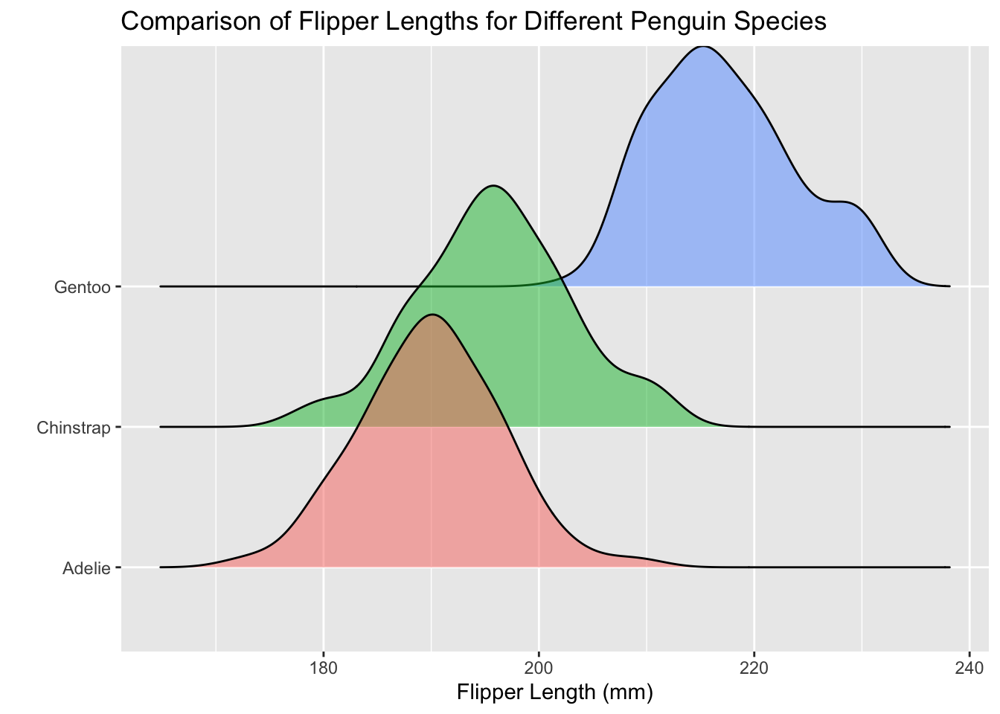
TipChanging the height of the ridges
If you’re not a fan of the ridges touching each other, then the scale argument was made just for you! If you set scale = 1 (inside geom_density_ridges()) then the top of each ridge will be the bottom of the next ridge.
ImportantAdding color
Adding color to a plot is a fun way to make it more engaging. Here, color ridges are much more exciting than gray ridges. However, when we incorporate a color (or fill) aesthetic, ggplot2 automatically creates a legend for us. That’s nice most of the time, but here the information from the legend (the values of species) is already encoded in y-axis. So, the legend has redundant information. We don’t want to have redundant information in our plots, which is why we removed the legend (theme(legend_position = “none")).
Area plot with geom_ribbon()
There are two types of area plots, one emphasizes the total area while the other emphasizes the area between two groups. The New York Times loves to use area plots, so we’ve pulled out two examples from the What’s going on in this graph collection:
Total Area
![Stacked area chart titled 'World electricity generation' showing global generation by source from 2000 to about 2022 in million gigawatt-hours. Fossil fuels (coal, gas, oil) are shown in dark blue-gray tones and clean sources (nuclear, hydroelectric and other, wind and solar) in yellow-orange tones. Coal is the largest source throughout, rising overall with a slight dip around 2020. Gas steadily increases, while oil remains relatively small and flat. Hydroelectric and nuclear grow gradually. Wind and solar expand rapidly after 2010. Total generation increases from roughly 14 million to nearly 27 million gigawatt-hours over the period.](images/nyt-area.png) Notice how the area always starts at 0 and goes up to wherever the highest \(y\) value is for that group.
Notice how the area always starts at 0 and goes up to wherever the highest \(y\) value is for that group.
Area Between Groups
![Line chart titled 'Summer temperatures in Las Vegas' showing trends from about 1950 to 2022. A red line represents average daily highs, which fluctuate around 100°F and increase slightly overall, marked as 'Daily highs +2°F.' A purple line represents overnight lows, which rise more sharply from about 70°F to around 80°F, marked as 'Overnight lows +11°F.' Shaded areas emphasize the space between highs and lows. The chart highlights that nighttime temperatures have increased much more than daytime highs over time.](images/nyt-ribbon.png) Notice how the area starts at the value of the lower group and goes up to the value of the higher group.
Notice how the area starts at the value of the lower group and goes up to the value of the higher group.
The total area plot can be made with geom_area() and the between area plot can be made with geom_ribbon(). Let’s explore each of these functions!
Total Area
Typically, area plots are variants of line plots. So, let’s use the gapminder data from the gapminder package to explore life expectancy over time. Since there are multiple countries for each continent (for each year), we will need to summarize these values before plotting2
library(gapminder)
continent_life_exp <- gapminder |>
group_by(year, continent) |>
summarize(mean_life = mean(lifeExp, na.rm = TRUE),
.groups = "drop")
head(continent_life_exp)# A tibble: 6 × 3
year continent mean_life
<int> <fct> <dbl>
1 1952 Africa 39.1
2 1952 Americas 53.3
3 1952 Asia 46.3
4 1952 Europe 64.4
5 1952 Oceania 69.3
6 1957 Africa 41.3Okay, now that we’ve summarized our data, let’s try making an area plot!
ggplot(data = continent_life_exp,
mapping = aes(x = year,
y = mean_life,
color = continent)) +
geom_line() +
geom_area(mapping = aes(fill = continent),
position = "identity") +
labs(x = "",
y = "",
title = "Mean Life Expectancy Over Time") 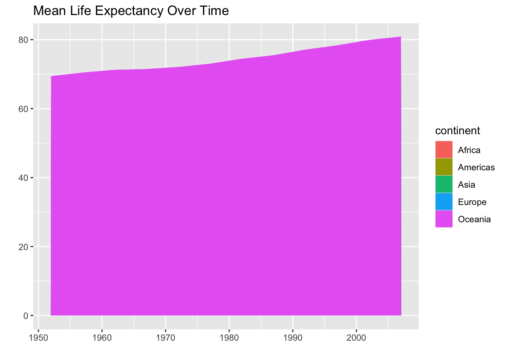
Huh, that doesn’t look great. It looks like we are only getting a plot for Oceania. We can try making the areas more transparent (with alpha) and see if we can uncover the other groups.
ggplot(data = continent_life_exp,
mapping = aes(x = year,
y = mean_life,
color = continent)) +
geom_line() +
geom_area(mapping = aes(fill = continent),
position = "identity",
alpha = 0.25) +
labs(x = "",
y = "",
title = "Mean Life Expectancy Over Time") 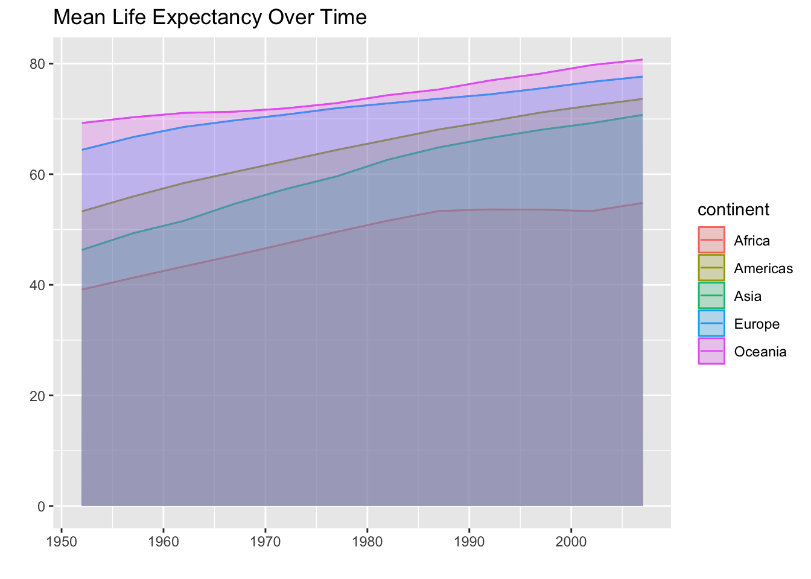
Okay! We do have every area plot, it’s just hard to see them. Looking at the plot we can tell that the tallest line is Oceania and the shortest line is Africa. If we do some clever reordering of the levels of continent then we should be able to see every group.
TipReordering Factors Based on Another Variable
In this case, we want to reorder continent based on the mean life expectancy. We could reorder this by hand, but that sounds like a lot of typing and seems error prone.
Instead, we can use the fct_reorder() function from the forcats package to reorder continent based on mean_life. We need to be sure to specify .desc = TRUE since we want the order to be larges to smallest!
gapminder |>
group_by(year, continent) |>
summarize(mean_life = mean(lifeExp, na.rm = TRUE),
.groups = "drop") |>
mutate(continent = forcats::fct_reorder(continent,
mean_life,
.desc = TRUE)
) |>
ggplot(mapping = aes(x = year,
y = mean_life,
color = continent)) +
geom_line() +
geom_area(mapping = aes(fill = continent),
position = "identity",
alpha = 0.6) +
labs(x = "",
y = "",
title = "Mean Life Expectancy Over Time") 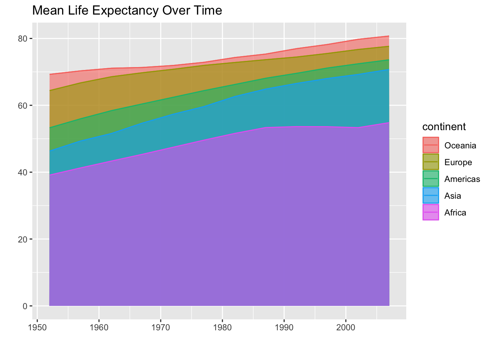
Area Between Groups
Suppose instead of featuring every continent, we want our plot to display the profound differences in life expectancy between the largest and smallest groups. This is what a ribbon plot accomplishes!
If you look at the documentation for geom_ribbon() you will see that the function requires ymin and ymax aesthetics. These values tell ggplot() where the shading should start and end. Currently, the data we are plotting have one column for continent and one column for mean_life, but we need to have our data structured in such a way that the values for Africa are in one column (for ymin) and the values for Oceania are in a different column (for ymax). So, we are going to need to restructure our date.
ribbon_summaries <- gapminder |>
filter(continent %in% c("Oceania", "Africa")) |>
group_by(year, continent) |>
summarize(mean_life = mean(lifeExp, na.rm = TRUE),
.groups = "drop") |>
pivot_wider(names_from = continent,
values_from = mean_life,
names_prefix = "mean_")
head(ribbon_summaries)# A tibble: 6 × 3
year mean_Africa mean_Oceania
<int> <dbl> <dbl>
1 1952 39.1 69.3
2 1957 41.3 70.3
3 1962 43.3 71.1
4 1967 45.3 71.3
5 1972 47.5 71.9
6 1977 49.6 72.9Now that I’ve pivoted the summary statistics, I have exactly the data I need! The mean_Africa column can be mapped to ymin and the mean_Oceania column can be mapped to ymax. Let’s give it a try!
gapminder |>
filter(continent %in% c("Oceania", "Africa")) |>
group_by(year, continent) |>
summarize(mean_life = mean(lifeExp, na.rm = TRUE),
.groups = "drop") |>
ggplot(mapping = aes(x = year,
y = mean_life,
color = continent)) +
geom_line(linewidth = 2) +
geom_ribbon(data = ribbon_summaries,
mapping = aes(x = year,
ymin = mean_Africa,
ymax = mean_Oceania
),
position = "identity",
inherit.aes = FALSE,
fill = "lightgray") +
labs(x = "",
y = "",
title = "Profound Differences in Life Expectancy",
subtitle = "Comparing Continents with Highest and Lowest Life Expectancy") 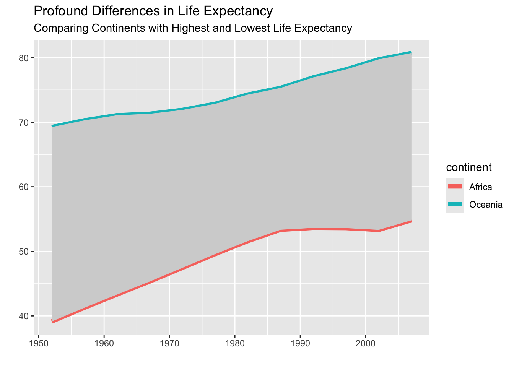
Voila! We have a ribbon plot highlighting the differences in life expectancy between these two continents. The icing on the cake would be to reorder our legend so it goes in the same order as the plot or even remove the legend in favor of annotations, which we will learn in Section 2.5.
Heatmap with geom_tile()
Heatmaps are a visualization which use color intensity to represent the magnitude of values in a dataset. With a heatmap, we can identify patterns quickly, spot trends and anomalies, understand relationships between variables, and compare large amounts of data efficiently.
A simple heatmap could help us spot trends in data collection. Based on the heatmap below, it appears that far more penguins were sampled on the Biscoe Island and the data collection in the first year (2007) was much smaller than the later years.
penguins |>
count(year, island) |>
ggplot(mapping = aes(x = year, y = island, fill = n)) +
geom_tile() +
labs(x = "",
y = "",
fill = "Penguins \nSampled",
title = "Number of Penguins Sampled Each Year",
subtitle = "Separated by Island of the Palmer Archipeligo")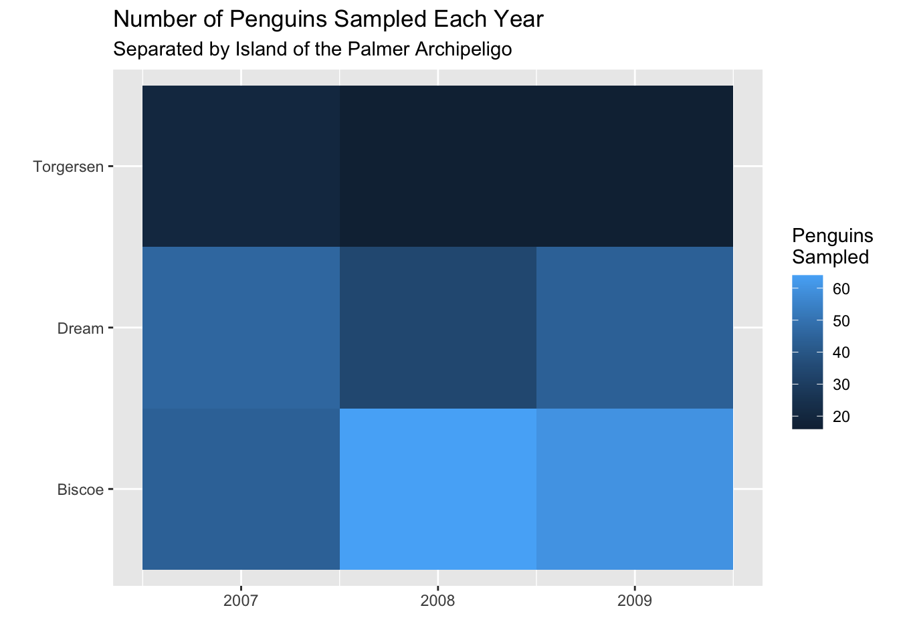
Another common application of a heatmap is to visualize relationships (correlations) between variables. The first step is to get the pairwise correlations. We like the corrr package for this, since it is compatible with the tidyverse and it return a dataframe.
library(corrr)
penguins_cor <- penguins |>
# Make year a category since we don't want to include it
mutate(year = forcats::as_factor(year)) |>
select(where(is.numeric)) |>
correlate(method = "pearson",
use = "pairwise.complete.obs")
penguins_cor# A tibble: 4 × 5
term bill_length_mm bill_depth_mm flipper_length_mm body_mass_g
<chr> <dbl> <dbl> <dbl> <dbl>
1 bill_length_mm NA -0.235 0.656 0.595
2 bill_depth_mm -0.235 NA -0.584 -0.472
3 flipper_length_mm 0.656 -0.584 NA 0.871
4 body_mass_g 0.595 -0.472 0.871 NA The only thing different about this output (as compared to the base R cor() function) is that the diagonal entries have correlations of NA instead of 1. Similar to making the area plots between groups, we should notice that these data are not currently in the layout ggplot() expects. Namely, the values of the second variable are spread across the columns. So, we will need to pivot our data before we plot.
penguins_cor <- penguins_cor |>
rename(term1 = term) |>
pivot_longer(cols = -term1,
names_to = "term2",
values_to = "correlation")
penguins_cor# A tibble: 16 × 3
term1 term2 correlation
<chr> <chr> <dbl>
1 bill_length_mm bill_length_mm NA
2 bill_length_mm bill_depth_mm -0.235
3 bill_length_mm flipper_length_mm 0.656
4 bill_length_mm body_mass_g 0.595
5 bill_depth_mm bill_length_mm -0.235
6 bill_depth_mm bill_depth_mm NA
7 bill_depth_mm flipper_length_mm -0.584
8 bill_depth_mm body_mass_g -0.472
9 flipper_length_mm bill_length_mm 0.656
10 flipper_length_mm bill_depth_mm -0.584
11 flipper_length_mm flipper_length_mm NA
12 flipper_length_mm body_mass_g 0.871
13 body_mass_g bill_length_mm 0.595
14 body_mass_g bill_depth_mm -0.472
15 body_mass_g flipper_length_mm 0.871
16 body_mass_g body_mass_g NA Okay, now that the data are in the correct orientation to plot, we want to think about the appearance of the plot. If we were to make a heatmap with these data, the x and y values would have the current labels of term1 and term2 (e.g., "bill_length_mm", "body_mass_g"). These don’t see like the labels we want for a nice looking visual!
Let’s first make a function to reformat the labels. The function should remove the units and the _ from the variable names, and convert the variable names to titles (i.e., Bill Length not bill length).
make_titles <- function(x){
# remove the units at the end of the name
str_remove(x, pattern = "(g|mm)$") |>
# replace all _ with spaces
str_replace_all(pattern = "_", replacement = " ") |>
# remove extra whitespace on left
str_trim(side = "both") |>
# convert the first letter of each word to upper case
str_to_title()
}Okay, now let’s use this function to make nice labels and get our heatmap!
penguins_cor |>
mutate(
across(.cols = c(term1, term2),
.fns = ~ make_titles(.x)
)
) |>
ggplot(mapping = aes(x = term1,
y = term2,
fill = correlation)) +
geom_tile() +
labs(x = "",
y = "",
title = "Correlation Between Penguin Body Measurements",
fill = "Correlation"
)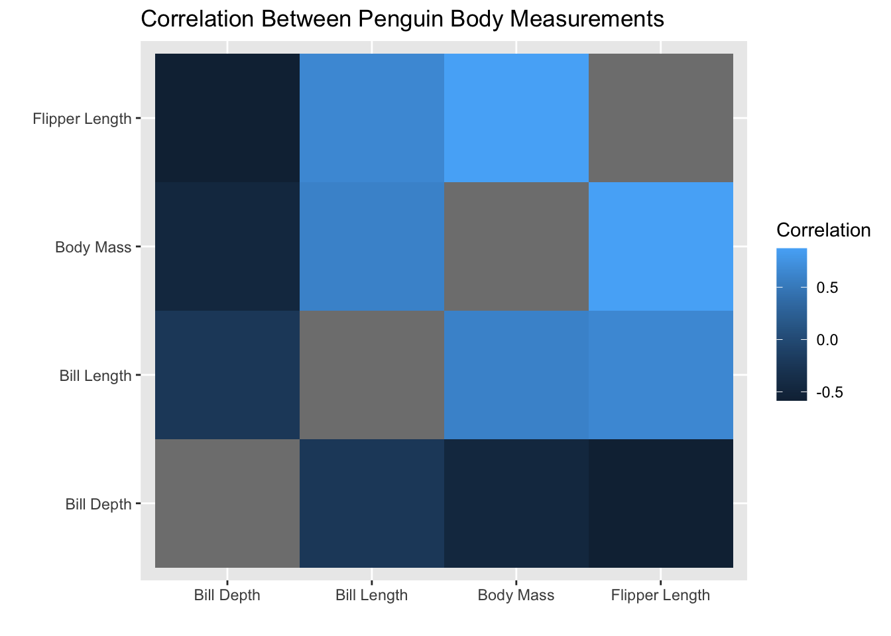
Hexbin plot with geom_hex()
A scatterplot is our classic visualization to investigate the relationship between two quantitative variables. However, the usefulness of a scatterplot decreases as the size of the dataset grows. For example, the diamond dataset has 53940 observations on the size, cut, and price of various diamonds. When making a scatterplot of these observations, we end up with a plot that leaves something to be desired.
ggplot(data = diamonds,
mapping = aes(x = carat,
y = price)
) +
geom_point()
You may have learned about using transparency (alpha) or point size (shape = ".") as methods to address this issue. Another option is to create a hexbin plot!
The hexbin R package contains binning and plotting functions for hexagonal bins. The geom_hex() function from this package is the tool we need to make a hexagonal bin plot.
library(hexbin)
ggplot(data = diamonds) +
geom_hex(mapping = aes(x = carat, y = price)) +
scale_y_continuous(
labels = scales::label_currency(prefix = "$")
) +
labs(x = "Carat of Diamond",
y = "",
fill = "Number of \nDiamonds",
title = "Number of Diamonds Observed",
subtitle = "For each Price, Carat Combination")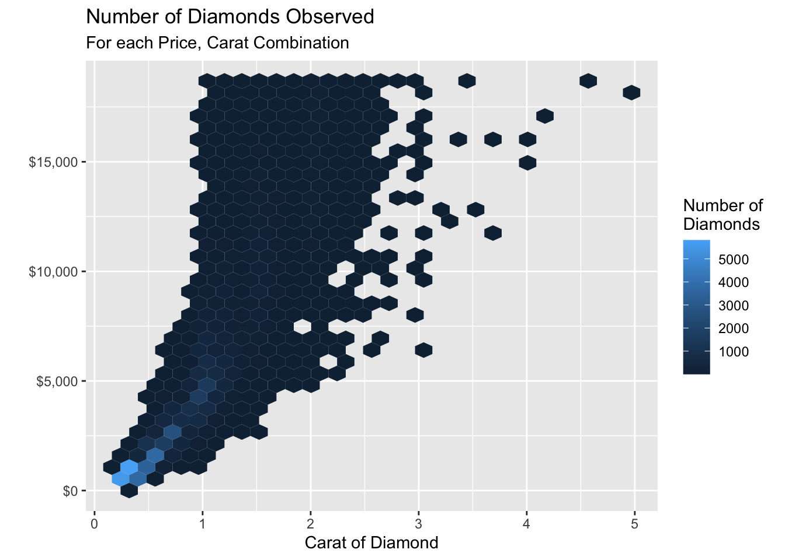
But wait, there’s more!
We’ve only begun to scratch the surface of “non-standard” geometries that could be used. The From Data to Viz website provides a more exhaustive list of the plethora of different data visualizations that could be made and the situations when they’d be most useful. Have you ever wondered when you would want to make a radar plot? Or maybe a parallel plot? This site has it all!
ImportantCheck-in
Which of the following non-standard plots could be used to visualize categorical variables?
Which of the following non-standard plots could be used to visualize numerical variables?
- Bubble Plot
- Violin Plot
- Circular Barplot
- Tree Map
- Sankey Diagram
- Waffle Chart
- Stream Graph
- Radar Chart
- Bubble Plot
Custom Colors and Themes
A huge part of making a compelling and convincing plot is your choice of color and layout. In this second part of the coursework, we are going to learn more about customizing colors and themes.
🎥 Required Video: The Glamour of Graphics
This is one of the best talks on simple ways to make your visualizations more clear and glamorous. We recommend watching the entire thing (maybe on a sunny walk or at the beach!), but if you can’t do the entire thing here are the main principles Will Chase outlines:
- Don’t make people tilt their head (to read your plot)
- Left align most of your text
- Lighten gridlines as much as possible and don’t use minor gridlines
- Legends suck
- Fonts matter
- Color is hard
Let’s work through each of these recommendations.
Don’t make people tilt their head
Let’s start with something simple! Not making people tilt their head to read your plot seems like an easy thing to do. We typically see plots that make people tilt their head when categorical variables have long names. For example, in the code below, we pull out the top 10 countries based on the length. We then compare the country’s life expectancy using side-by-side boxplots. As you can see, the names of the countries are illegible.
countris_to_keep <- gapminder |>
distinct(country) |>
mutate(name_len = str_length(country)) |>
slice_max(n = 10, order_by = name_len)
gapminder |>
semi_join(countris_to_keep, by = "country") |>
ggplot(mapping = aes(x = country,
y = lifeExp)
) +
geom_boxplot()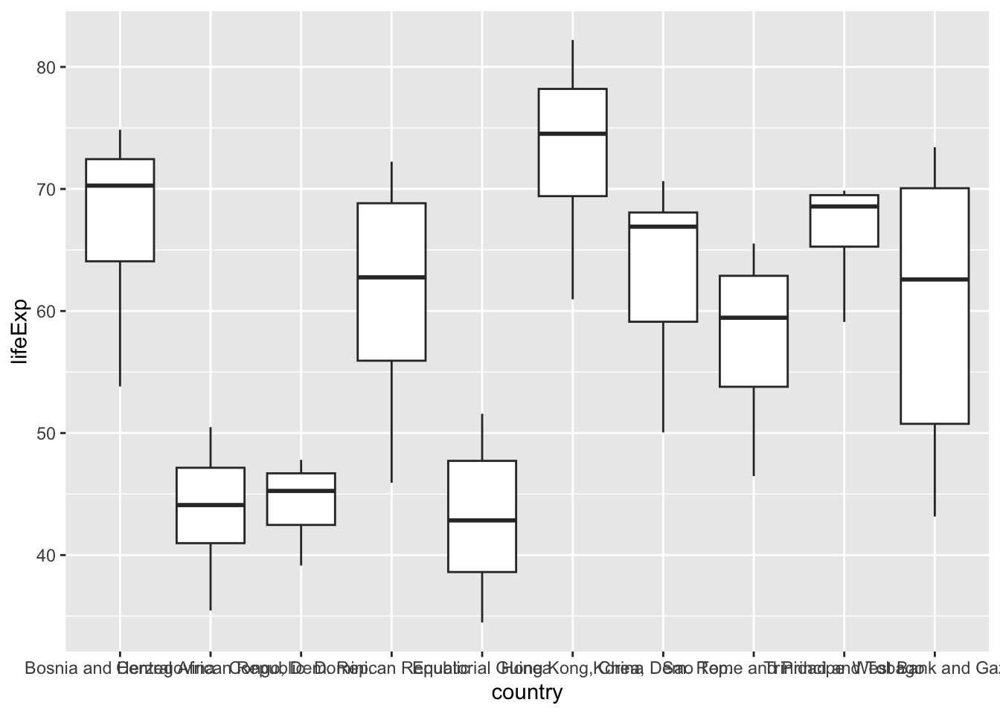
A “typical” fix is to tilt the names of the countries 45 degrees, like so:
gapminder |>
semi_join(countris_to_keep, by = "country") |>
ggplot(mapping = aes(x = country,
y = lifeExp)
) +
geom_boxplot() +
theme(axis.text.x = element_text(angle = 45, hjust = 1))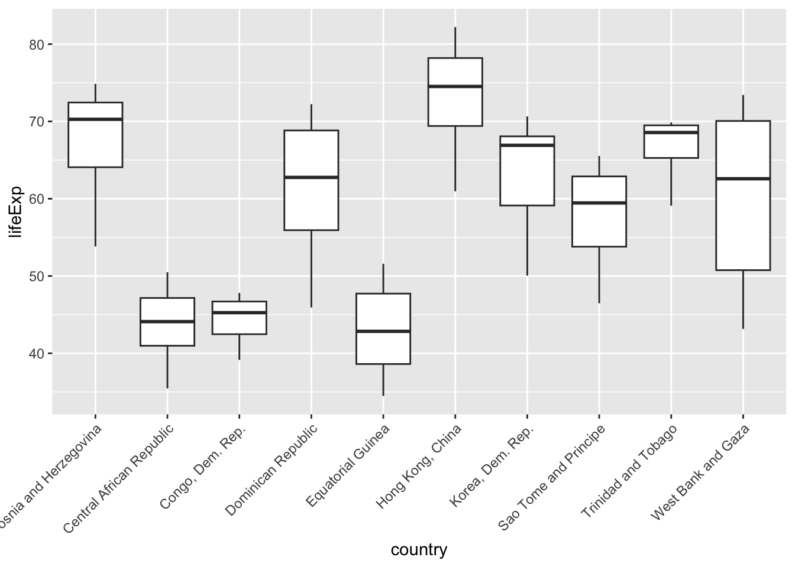
However, our plot now makes people tilt their head! A better fix is to move the countries to the y-axis, where the names have plenty of space. Viola!
gapminder |>
semi_join(countris_to_keep, by = "country") |>
ggplot(mapping = aes(y = country,
x = lifeExp)
) +
geom_boxplot() +
labs(x = "Life Expectancy (Years)",
y = "")
You might have noticed something about a lot of the plots we’ve shown you in this coursework—many don’t have y-axis labels. The reason for this is twofold, first people always have to tilt their head to read the y-axis label. Second, many of these labels are not necessary because the variable is obvious.
Here, we don’t need a label that says “Country” because the y-axis values can clearly communicate that context. In Figure 10 the y-axis didn’t have a clear context, but we included that context in a location where the reader didn’t need to tilt their head (the plot title).
Left align most of your text
This recommendation is very easy to follow when making plots with ggplot2 because left alignment is the default orientation for text. Sometimes we see students get excited at the idea of centering their plot title, but Will Chase (and your teachers) would recommend against it. Use that creative energy on finding great colors!
Lighten gridlines as much as possible
This documentation page provides a complete list of all the themes that are built into ggplot2.
If you want to go a bit deeper into the land of ggplot themes, this blog by Emanuela Furfaro provides great advice on how to make your own custom ggplot theme function.
Legends suck
In general, legends suck because they take people’s eyes away from your plot. Below, we present a few options for trying to address this issue.
Reordering Your Legend
If you must keep your legend, then you absolutely must format your legend so that the colors appear in the same order as they appear on the plot. When your legend is not in order, then it is substantially more difficult for people to read your plot, as seen in this amazing gist from Jenny Bryan.
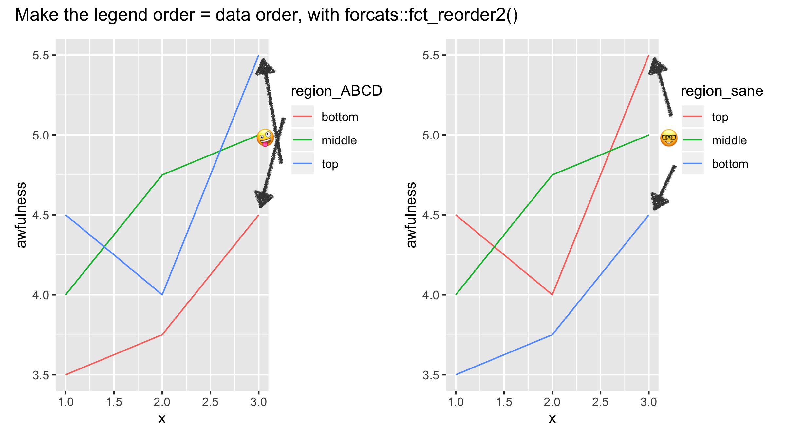
The fct_reorder() and fct_reorder2() functions from the forcats package are the key tools for getting your legend to have the same ordering as your plot. In Figure 6, the legend did not appear in the same order as the plot. Let’s fix that using fct_reorder()!
gapminder |>
filter(continent %in% c("Oceania", "Africa")) |>
group_by(year, continent) |>
summarize(mean_life = mean(lifeExp, na.rm = TRUE),
.groups = "drop") |>
mutate(continent = forcats::fct_reorder(.f = continent,
.x = mean_life,
.desc = TRUE)) |>
ggplot(mapping = aes(x = year,
y = mean_life,
color = continent)) +
geom_line(linewidth = 2) +
geom_ribbon(data = ribbon_summaries,
mapping = aes(x = year,
ymin = mean_Africa,
ymax = mean_Oceania
),
position = "identity",
inherit.aes = FALSE,
fill = "lightgray") +
labs(x = "",
y = "",
title = "Profound Differences in Life Expectancy",
subtitle = "Comparing Continents with Highest and Lowest Life Expectancy",
color = "Continent") +
theme_bw() +
theme(panel.grid.minor = element_blank())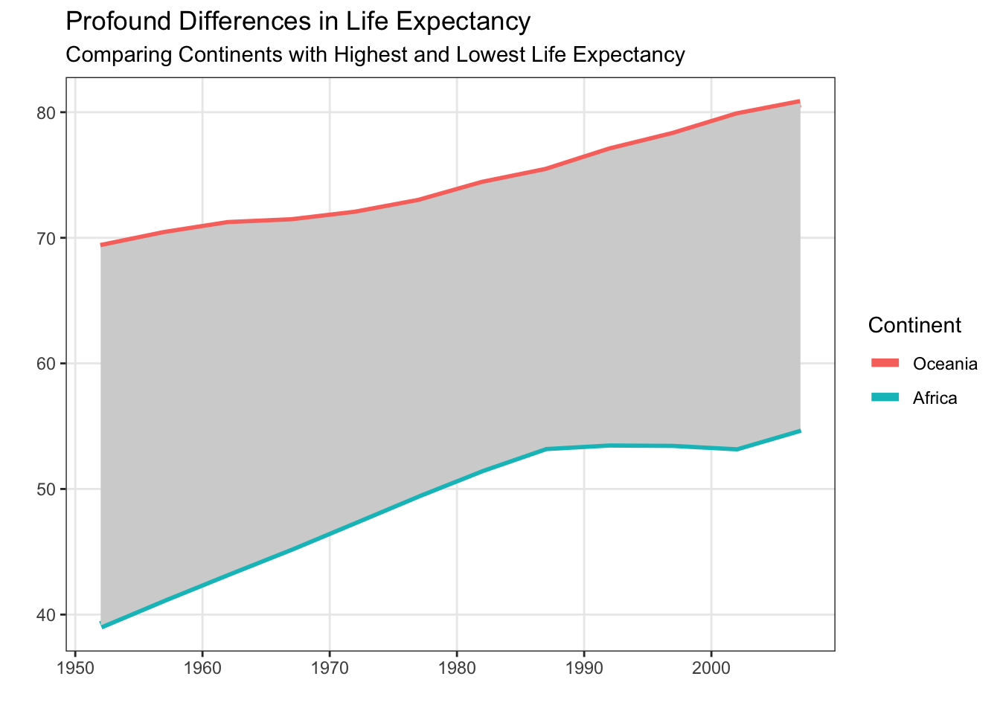
Embedding Your Legend in the Plot Title
If you can remove your legend, then there are two approaches you can take—adding the legend to the plot title or adding annotations to the plot. Let’s take a look at the first option, adding colors to your plot title.
The ggtext package allows you to add hex colors and other HTML elements (e.g., italics, boldface) to plot titles. The process involves two main steps:
Wrap your text in HTML tags within the
labs()function.Tell ggplot to render the HTML by adding
plot.title = element_markdown()inside thetheme()function.
Let’s see how this can look! I’ve added the hex colors for the two continents (from Figure 6) into the subtitle of my plot:
library(ggtext)
gapminder |>
filter(continent %in% c("Oceania", "Africa")) |>
group_by(year, continent) |>
summarize(mean_life = mean(lifeExp, na.rm = TRUE),
.groups = "drop") |>
ggplot(mapping = aes(x = year,
y = mean_life,
color = continent)) +
geom_line(linewidth = 2) +
geom_ribbon(data = ribbon_summaries,
mapping = aes(x = year,
ymin = mean_Africa,
ymax = mean_Oceania
),
position = "identity",
inherit.aes = FALSE,
fill = "lightgray") +
labs(x = "",
y = "",
title = "Profound Differences in Life Expectancy",
subtitle = "Comparison of <span style='color: #17b3b7;'>Oceania</span> and <span style='color: #f35e5a;'>Africa</span>") +
theme_bw() +
theme(
legend.position = "none",
plot.subtitle = element_markdown(),
panel.grid.minor = element_blank()
)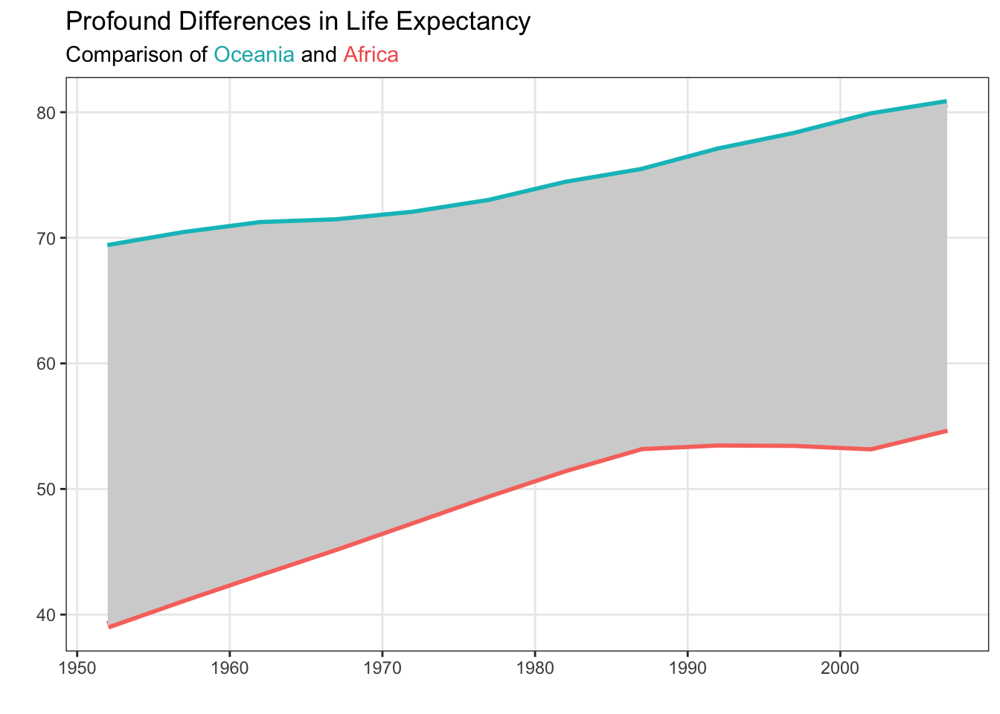
Notice that the subtitle is still specified as a string. Inside the string there are HTML elements (<span>) that declare the colors of the text. For example, <span style='color: #17b3b7;'>Oceania</span> declares that the text “Oceania” should be printed with the color #17b3b7. The beginning of the span (<span) and the end of the span (</span>) declare when the coloring starts and ends.
TipFinding the Hex Colors
There are a variety of ways you can get the hex codes for the colors in your plot. To grab the codes for these base ggplot colors, I used an online color picker (e.g., imagecolorpicker.com). If you are using non-default colors (e.g., the viridis or RColorBrewer packages), there are built-in functions for getting the hex codes.
library(viridis)
viridis(5)[1] "#440154FF" "#3B528BFF" "#21908CFF" "#5DC863FF" "#FDE725FF"library(RColorBrewer)
brewer.pal(5, "Set2")[1] "#66C2A5" "#FC8D62" "#8DA0CB" "#E78AC3" "#A6D854"Removing Your Legend with Annotations
Maybe you feel like having the legend in the plot title is still difficult for people to read. We don’t disagree! It would be really easy for people to read the legend if it was included in the body of the visualization. Let’s explore that option!
Let’s first start with our base plot that we want to add annotations to:
Code
plot <- gapminder |>
filter(continent %in% c("Oceania", "Africa")) |>
group_by(year, continent) |>
summarize(mean_life = mean(lifeExp, na.rm = TRUE),
.groups = "drop") |>
ggplot(mapping = aes(x = year,
y = mean_life,
color = continent)) +
geom_line(linewidth = 2) +
geom_ribbon(data = ribbon_summaries,
mapping = aes(x = year,
ymin = mean_Africa,
ymax = mean_Oceania
),
position = "identity",
inherit.aes = FALSE,
fill = "lightgray") +
labs(x = "",
y = "",
title = "Profound Differences in Life Expectancy",
subtitle = "Comparing Continents with Highest and Lowest Life Expectancy"
) +
theme_bw() +
theme(
legend.position = "none",
panel.grid.minor = element_blank()
)
plot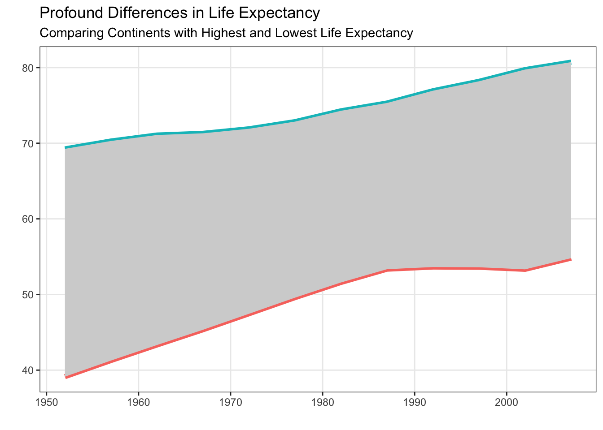
Now that we have our base plot (saved as plot), we can explore adding annotations to the plot using geom_text(). Looking at the documentation for geom_text() you will notice that you must supply x, y, and label aesthetics. So, you need to have a dataframe with three columns indicating where to put the labels (x and y location) and what labels should be used. Let’s think about how to make this dataframe.
Based on Will Chase’s advice, we should consider adding annotations on the left (“left align most of your text”), somewhere around 1955. If we want the annotations to help people know what continent each line is associated with, it seems like we want the text to be close to the line. For consistency, let’s put both annotations inside the grey area.
annotate_text <- gapminder |>
filter(continent %in% c("Oceania", "Africa"),
year == 1957
) |>
group_by(year, continent) |>
summarize(y_lab = mean(lifeExp, na.rm = TRUE),
.groups = "drop") |>
# Move text based on what continent it is
mutate(
y_lab = y_lab + if_else(continent == "Africa",
2, # Move up for Africa (on bottom)
-2 # Move down for Oceania (on top)
)
)
annotate_text# A tibble: 2 × 3
year continent y_lab
<int> <fct> <dbl>
1 1957 Africa 43.3
2 1957 Oceania 68.3Now that we have our annotations, let’s put them on the plot!
plot +
geom_text(data = annotate_text,
mapping = aes(x = year,
y = y_lab,
label = continent,
color = continent
),
inherit.aes = FALSE
)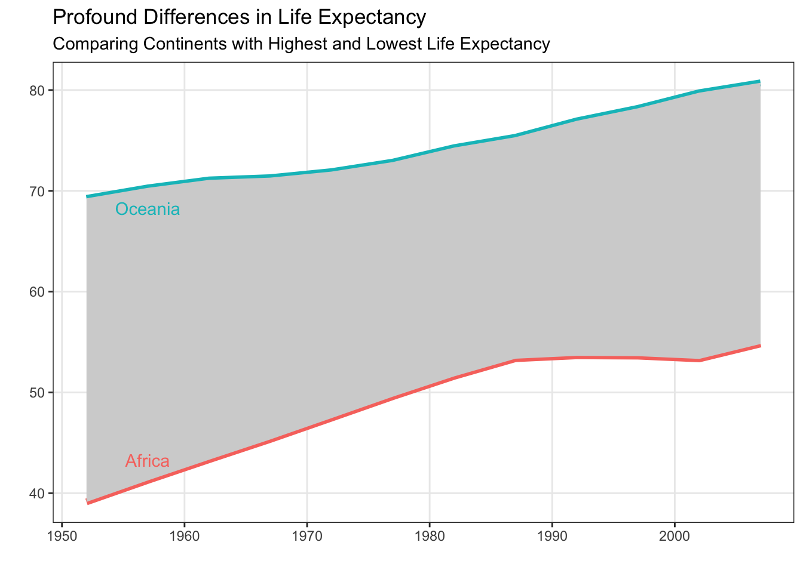
Fonts matter
Color is hard
There are so many color packages in R that all work with ggplot. Regardless of what colors you decide to work with, you will need to know:
- What aesthetic are the colors associated with (e.g.,
colororfill)? - Is the palette continuous (for a quantitative variable) or discrete (for a categorical variable)?
The answers to these two questions direct you toward what function you need to use to change the colors in your plot. For example, to change the colors in a filled area plot (like Figure 5) you would need to use a scale_fill_XXXX() function, whereas with a hexbin plot (like Figure 10) you would need to use a scale_color_XXXX() function.
We recommend poking around the Color Scales and Legends chapter of the ggplot2 book by Hadley Wickham. This chapter covers how color scales work, how to choose palettes, and how to customize them. The chapter even motivates the importance of choosing accessible color palettes that everyone’s eyes can see.
The number of color packages can get a bit overwhelming, which is why Emil Hvitfeldt put together a comprehensive list of color palettes in R. Check it out! Find the color palette that speaks to you! Is it the Apricot palette from the LaCroixColoR package?!
Check-ins
1. Which of the functions below would you use to change the colors of the bars on the following plot?
scale_color_continuous()scale_color_discrete()scale_fill_continuous()scale_fill_discrete()
p <- ggplot(penguins,
mapping = aes(y = species,
fill = species)) +
geom_bar() +
labs(title = "Number of Academy Award Winners\n from major cities",
y = "",
x = "") +
theme(legend.position = "none")
p2. Consider the plot in Question 1. What change was made to it in each step below? That is, what code would go inside the function + theme( ) to produce the added change?
p +
theme(legend.position = "none")
p +
theme(panel.grid.minor.x = element_blank())3. Which built-in theme is each of the following plots? That is, what theme_XXXX() function would produce the added change?
p +
theme_classic() +
theme(legend.position = "none")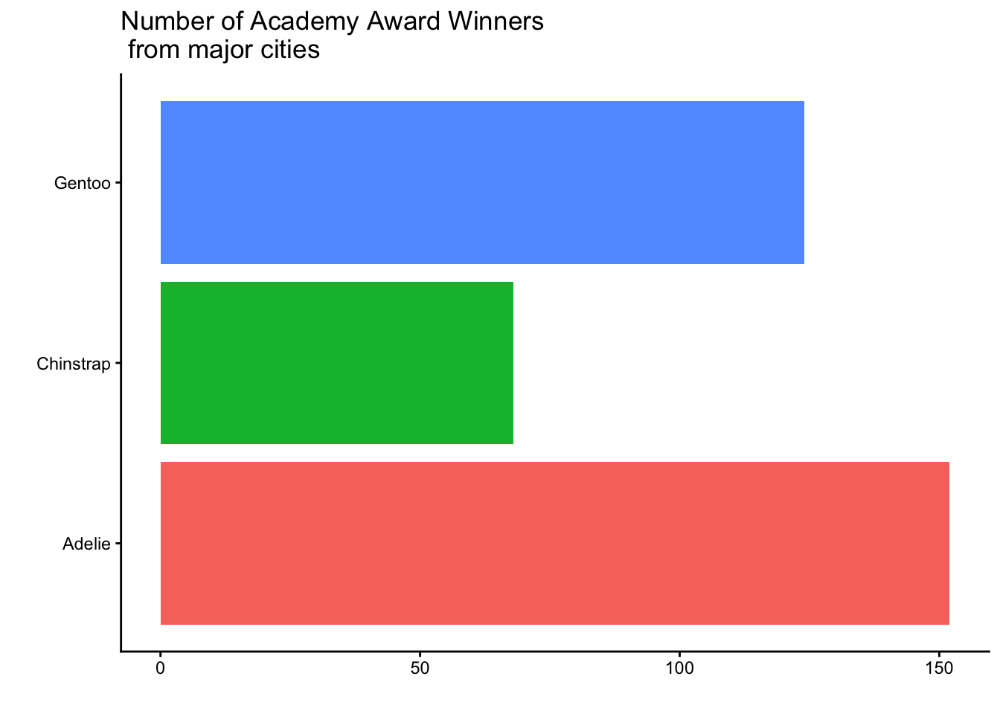
p +
theme_bw() +
theme(legend.position = "none")p +
theme_dark() +
theme(legend.position = "none")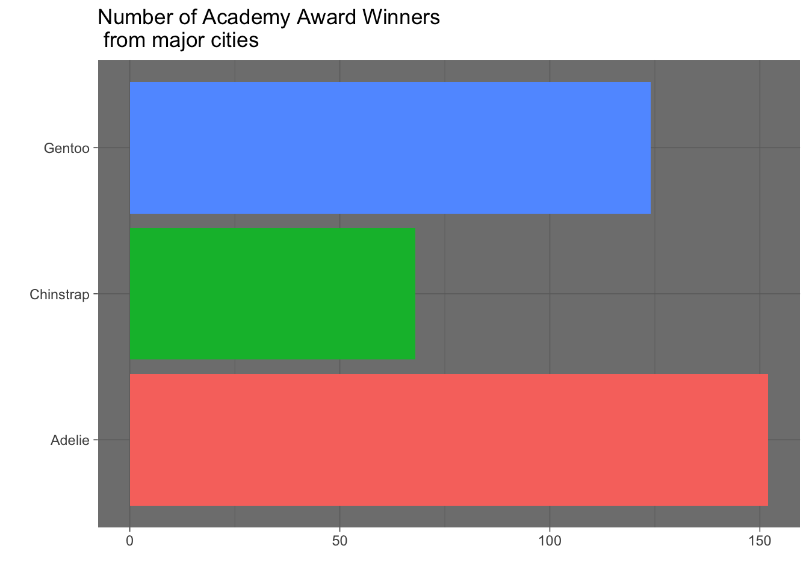
p +
theme_void() +
theme(legend.position = "none")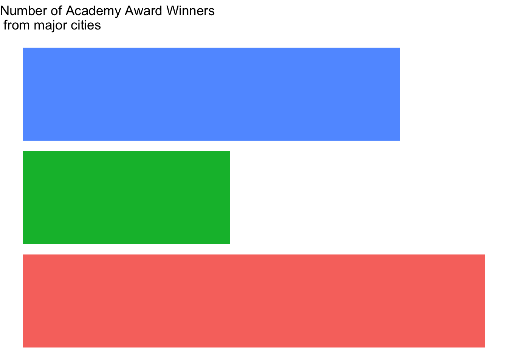
4. Which of the plots above (a, b, c, or d) best adheres to the principles outlined by Will Chase (in the Glamour of Graphics)?
Extra Resouces
- The
jcolorspackage for color palettes - The
ggthemerpackage for setting universal themes. - Make your own theme to use!